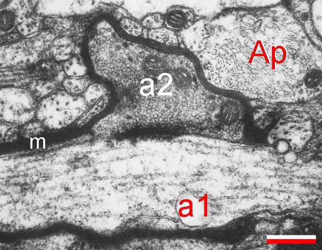
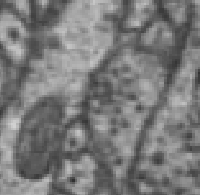

MEC Synapse Annotation Protocol v1.0
Checking and completing synapse annotations (painted clefts + line annotations) in the MEC / Zheng-hippocampus volumes.
General task
Go through each synapse indicated by either a painted cleft or a pre-existing line annotation and check it for validity, then scan the volume for any missed synapses.
A note about saving: the "Save Changes" button at the top of the interface only saves the painted segmentation, not changes to the annotation layers. Annotation layers autosave every 30 seconds; the save icon on the right-hand sidebar saves them manually. Refreshing or closing without that manual save loses any annotation changes since the last autosave.
Step-by-step
Temporary addition (requested by Chris, 2026-08-05): collect all examples of AI-generated axo-axonic synapse painting in separate point-annotation layers marking the location of the painted synapse — one layer for bouton–bouton, another for bouton–shaft. Do not delete their segmentation paint when you find them.
- The volume starts with an annotation layer marking the points where AI-generated synapses occur. Copy this layer (click-and-drag the layer, then shift+click) and rename it "to_check". Also make a second, empty annotation layer named "checked".
- Scan through the volume and add annotation points anywhere you see existing tracer-made line annotations that don't coincide with an AI-made synapse.
- Work through the "to_check" list, deleting each point as you check it. Each time you delete a point, add a corresponding point to the "checked" layer — even when you're erasing a synapse, so you know the area has been covered.
- Edit the cleft painting to add or remove as needed:
- Actual gaps between the pre- and post-partners' membranes usually aren't visible in mouse tissue, so "cleft" here means all the space from the inside of the presynaptic partner's membrane to the inside of the postsynaptic partner's membrane, plus any PSD you notice.
- If the clefts of two separate synapses touch, paint one with a different segment by changing the "target value" number in the brush menu (this creates a new segment, same as in VAST).
- Create a line annotation for each synapse in the "New Tracer Synapses" annotation layer that came with the volume (it has Nico's shader script preloaded). Place the first point inside the presynaptic partner and the second point inside the postsynaptic partner.
- Any axo-axonic synapses go in their own annotation layer (requested by Nico for labeling purposes).
- Once all existing synapse sites have been checked, scan the volume for any missed by both the previous tracers and the AI, and add them as well.
Axo-axonic synapse criteria
- Bouton–bouton synapses can only be marked if the boutons aren't synapsing with anything else.
- Bouton–shaft synapses must show clear PSD to qualify.
- Axo-somatic synapses likely won't have PSD but still need to be marked. (Criteria pending — awaiting the outcome of Ben and Zhihao's conversation.)
Examples


General notes
- Most mammalian CNS chemical synapses are monadic (one partner). Per Zhihao, roughly 20–30% of boutons in some brain areas have more than one post-partner — the MEC ratio is unknown. Even then, most are one bouton onto two spines; one bouton onto one spine and another bouton should be very rare.
If you want to nuke the volume and start from scratch
- Consider making a copy of the original paint layer first (memory-usage impact untested).
- Select the fill tool and switch to 3D fill.
- Fill the whole volume with a single segment color.
- Switch the fill segment to ID 0 and fill again — this deletes everything and may take some time.
- Saving afterward may take a very long time (10–15 minutes).
Related documents
- mec_synapse_annotation_2026_08 — the live working doc this SOP mirrors (Jay Gager, Aug 2026)
- SOP-006: WebKnossos GT Semantic Segmentation Protocol — the painting conventions this task builds on
- Task History · MEC & Hippocampus era — the data sheets for this work
- Glossary — synapse, cleft, PSD, bouton definitions
Revision history
- v1.0 (2026-08) — initial SOP, mirrored from Jay's working doc of 2026-08-05 including Chris's temporary axo-axonic collection request. Axo-somatic criteria pending.